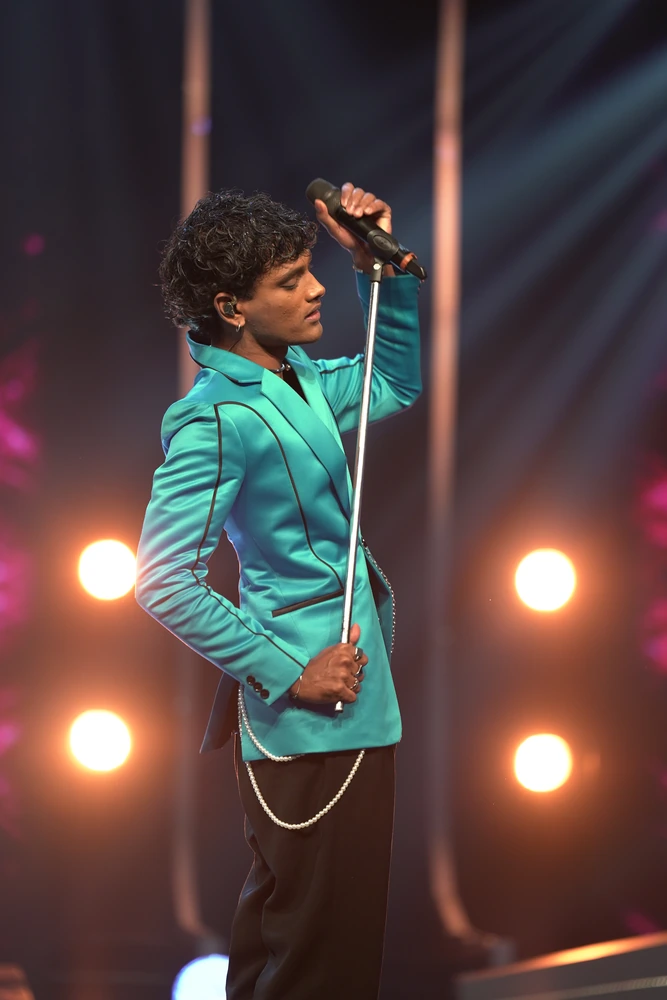
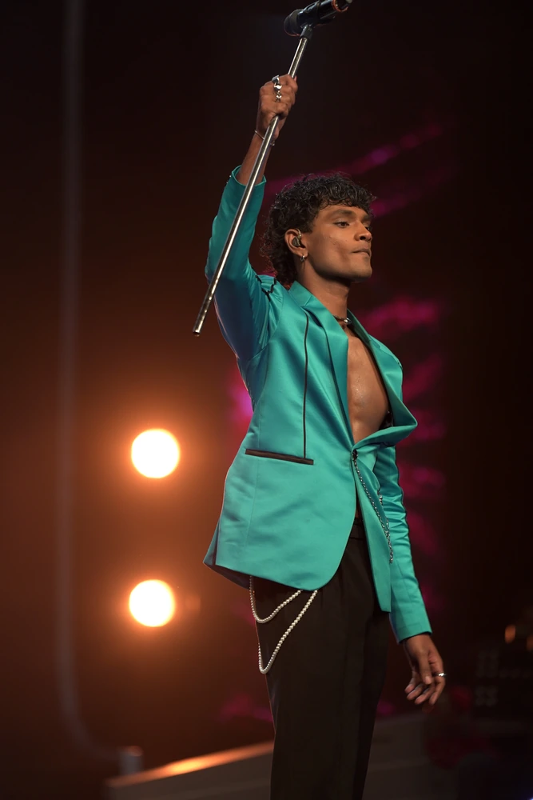

The Voice Sri Lanka Season 3
Isaac’s rise to fame as the New Rock Artist began with his powerful comeback on The Voice Sri Lanka Season 3 2025, joining Team Raini Charuka, who used her ‘Block’ on Mihindu Ariyaratne. Isaac became a fan-favorite as he earned the ‘Most Votes Online’ for both his LIVE performances making him Team Raini’s Finalist.




